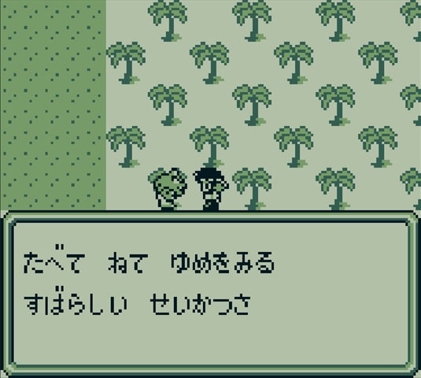
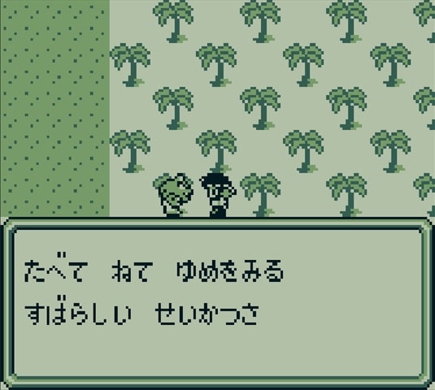
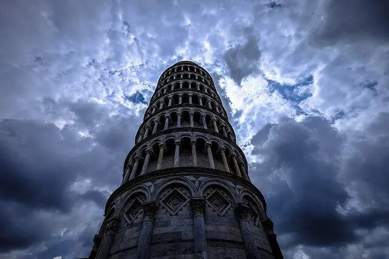

魔界塔士Sa・Gaの世界観
はじめに
魔界塔士サガは1989年12月15日に発売されたゲームボーイ(GB)のソフトで、GB初のRPGです。GBでRPGなんて不可能だと言われている中で開発されたソフト（たしかそうだよね？）で、スクウェア初のミリオンヒット作品です。
プロデューサーとか作曲とかの情報も書きたい。
河津さんのツイートやゲーム内の情報などをもとに世界観を整理してみたいと思います。
世界観
魔界塔士Sa・Gaには、世界の中心に『塔』があります。この塔は、楽園に通じていると伝えられています。この塔の秘密に挑み、楽園を目指す者を『魔界塔士』と呼んでいます。

塔の画像を入れる。
塔の中では時間は一定に流れていない為、時代の違う世界が多元軸に構成されています。これはゲーム中の以下のセリフでも示唆されています。
（画像は7階の石像の台詞）

魔界塔士Sa・Gaの世界には、大陸世界、海洋世界、空中世界、都市世界の4つの大きな世界と、いくつかの小さい世界があります。塔と登っていく過程でこれらの世界を目にしていきます。
地形、気候、風土が異なるこれらすべての世界が1つの塔に束ねられています。塔の内部は数々のドアがあり、そのドアを通じて各世界に行き来できるようになっています。
塔の内部の画像を入れる。
このゲームのプロデューサーである河津さんは以下のように言っており、魔界塔士サガは『多元世界を表現したゲーム』だということがわかります。
多元世界を目に見える形で表現したかったんですね。世界を繋ぐものが塔だったり柱だったりしたのです。 https://t.co/1ddM8Lif3f
— 河津秋敏 (@SaGa30kawazu) December 12, 2020
どこまでも登っていくだけでストーリーが進んでいくという単純な構造が実現できるからです。最初はどこまで下りていって最後は魔王と戦うパートとセットで考えていたのですが、塔に登る方だけが残りました。 https://t.co/pRZRqTmDqk
— 河津秋敏 (@SaGa30kawazu) December 12, 2020
1階が大陸世界なのに5階は海洋世界。10階は空中世界なのに16階は都市世界。このように、上に登っているにもかかわらず大陸の上が海だったり、空中の上が都市だったりと、地形を無視したつくりになっていますが、違う世界なんだから何でもありです。
このようなつくりをしているため、主人公は塔を登る過程で様々な世界を目にすることになります。
これらの世界を目にした上で、最上階の楽園にたどり着いた主人公は何を思うのか？この世に楽園なんて本当に存在するのか？というのがこのゲームのテーマだと思っています。
ごちゃまぜな世界観が魔界塔士サガの魅力だと思っています。
ボスきゃらは中国の五行思想の四神（玄武、青龍、白虎、朱雀）で、それを生み出したのは仏教のアシュラ（阿修羅）だったり、
北欧神話に登場するフェンリルや炎の巨人やクラーケンやヨルムンガンドル メソポタミア神話のティアマット 旧約聖書のベヒーモスやリヴァイアサン 日本のおばけやブルブル など、様々なモンスターに変身できたりします。
また、塔を登っていく過程でプレイヤーは様々な世界を目にします。
何もしなくても暮らすことができる世界や地獄の苦しみの果てに楽園があると考える地獄、アシュラが世界をめちゃくちゃにしたおかげで潤う建築？か何かの世界だったり、 一貫性のない世界を渡り歩きながら楽園を目指すというのがこのゲームの魅力なのかなと。
マップとセリフ
- 大陸世界（1階）
- 楽園（3階）
- 地獄（4階）
- 海洋世界（5階）
- 石像（7階）
- 病院（9階）
- 空中世界（10階）
- 渇いた世界（13階）と洪水の世界（14階）
- 都市世界(16階)
- 建築世界(18階)
- 核シェルター(19階)
- 記録室（20階）
- 花畑(21階)
- アシュラ(23階)
- 真の塔
- 最上階
この世界では3人の王が戦争をしています。鎧の王と剣の王と盾の王の3人です。
剣の王からキングの剣、鎧の王からキングの鎧、盾の王からキングの盾を手に入れることで、塔を登るために必要なアイテム、クリスタルを手に入れることができます。
何もしなくても暮らすことができる世界。生きがいややりがいというものが恐らく存在しないこの世界は到底楽園とは言い難いでしょう。
 

辺り一面が針の山になっている苦行に満ちた世界。
悪魔が支配している世界で、この世界の住民は「苦痛の先に楽園がある」と考え、苦痛に耐えながら生きている。
「4匹の悪魔」に関する情報が得られる。4匹の内1匹は大陸世界で戦った玄武のこと。


海上はもちろん海底にも人が生きている場所があります。
この世界は四天王の一人、青龍が支配する世界。竜王を追い出した青龍が支配している世界。
青龍の赤玉と竜王の青玉を手に入れるとクリスタルが手に入り、次の世界に行ける。


謎の石像が世界が多次元であることを示唆している。

ただの病院。復活の館や宿屋があります。
入院？している人が4匹の悪魔と大悪魔について教えてくれます。

びゃっこが支配する世界。白虎に対抗するレジスタンスの一員である「ジャンヌ」とその妹「ミレイユ」がクリスタルの鍵を握っており、白虎はそれを狙っている。
白虎に抵抗する組織であるレジスタンスのリーダーだったシャルルの双子の娘がクリスタルの鍵。
妹思いの姉、ジャンヌと、裏切りの妹、ミレイユ。
ミレイユは白虎の側について姉のジャンヌを売ってしまう。ミレイユはスクウェア三大悪女として知られている。


13階は、雨が降らないために地面が干乾びてしまい、苦しんでいるタコ達が住む世界。
14階は、世界の真中にある湖があふれ、水浸しになってしまっている世界。
13階と14階は繋がっていて、本来であれば14階の水が13階に流れていたが、水の流れが詰まってしまったために13階も14階も困ってしまっている。
13階


14階


13階


14階


すざくが支配する世界。強力な朱雀に脅かされている。何とか抵抗するものと力を合わせて白虎を倒す。
第16階層にある荒廃した都市世界。現実的な世界で地下鉄が存在していたり、
「アキバ」「アメヨコ」「シンジュク」といった見覚えのある建物や町もあり、
まるで東京を思わせる雰囲気を醸し出しています。


アシュラのおかげで潤っている世界。戦争で儲かるというのは、心情的にはなんか嫌ですけど現実的にもある話。
そして神の存在が示唆される。


子供もその親も死んでいる救いのない世界。戦争の酷さを表現している。


過去に楽園を目指した魔界塔士がいつどこで絶命したのかが記録されている。
アーサー：11階 1919年03月21日
くろう ：13階 1950年02月18日
ハーン ：19階 1972年06月14日
ジーク ：06階 1924年02月12日
リズ ：12階 1980年01月28日
まだ生存している主人公はこれから記録されようとしている。


かみに言われたことを信じてただひたすら人を待つ。信じる者は救われる・・・のか？自分だったらそんな人生嫌ですけど、知らぬが仏とも思う。
アシュラがいる世界。一部の人間はこのアシュラがモンスターを生み出していて、いわば諸悪の根源だと認識しているようだが果たして・・・？

この塔を登ると真の楽園がある・・・？
そして最上階。何も無い空間にかみがいる。倒すと扉があるがその先に楽園があるかもしれないが、主人公が選んだのは「自分たちの世界に返ること」。
楽園目指した主人公が選んだのは自分たちの世界。結局楽園なんてものは今自分がいる世界より良いものなんてない。
塔を通じて様々な世界を目にして、初めて頂上までたどり着いた魔界塔士である主人公が出した結論。
河津さんのコメント
そういう話をされると、そういうクレームが来ちゃうからやめてー！ というのはありませんね。皆さん寛容です。真実の神はその程度のことで傷ついたり、失われたりすることは無いからだと思います。 https://t.co/unKXVGzyFp
— 河津秋敏 (@SaGa30kawazu) December 12, 2020
ねずみおとこ が好きだったんですが、ＤＳ版ではねずみおやじに変えられてしまいました。でも、ねずみおやじも何気に好きです。 https://t.co/ZeKwUsLYL2
— 河津秋敏 (@SaGa30kawazu) December 12, 2020
ストーリー的に狙った行動です。 https://t.co/BVG4sRsOVQ
— 河津秋敏 (@SaGa30kawazu) December 12, 2020
この辺はアイデア出しの段階で、みんなでいろいろ意見をだして構成を決めましたね。 https://t.co/aKAquLqRIM
— 河津秋敏 (@SaGa30kawazu) December 12, 2020
ワンダースワン版は今回もプロデューサーをやっている三浦君が頑張ってくれたタイトルなので、生放送でその辺も取り上げてもらいましょう。 https://t.co/QCKkD8XUPe
— 河津秋敏 (@SaGa30kawazu) December 12, 2020
魔界塔士はそのままリメイクでは短すぎるんで、内容をかなり盛らないといけないんですよね。その辺がリメイクが進まない理由です。 https://t.co/mrbXFRotjw
— 河津秋敏 (@SaGa30kawazu) December 12, 2020
ちから、じゃありませんでしたっけ？ https://t.co/LGUjspXwr5
— 河津秋敏 (@SaGa30kawazu) December 12, 2020
そんな都合のいい楽園なんかないんだ、というのがテーマなので、少なくとも扉の向こうが楽園でないのは確かですね。 https://t.co/j2pB2idObU
— 河津秋敏 (@SaGa30kawazu) December 12, 2020
バトルでは、「かみは しんだ」と出ますが、どうなんでしょうね。 https://t.co/Dwh5BqJuui
— 河津秋敏 (@SaGa30kawazu) December 12, 2020
当時の秋葉原には、海賊版か正規版かよく分からないソフトがたくさん流通していて、それらには漢字四文字のものが多かったんです。サ・ガにはそういうアンダーグラウンドなイメージを被せたかったので「魔界塔士」と名付けました。 https://t.co/4c1OtwsHZL
— 河津秋敏 (@SaGa30kawazu) December 12, 2020
このデスマシーンは魔界塔士サガのデスマシーン（2って書いてないので）
SQUARE ENIX様の「ロマンシング サガ リ・ユニバース」にて、
— daible (@sealmancn) May 27, 2022
『 SS デスマシーン 』を描かせて頂きました。
宜しくお願い致します！https://t.co/g6iZ05qP34#仕事絵#ロマサガRS #新ロマサガRS pic.twitter.com/t7FqMRqXLo
海外で昔あったキャンペーン
warmech = デスマシーン
また、デスマシーンは元々FFの敵キャラ。FFⅠだったかな。
Chris Houlihan was named in a secret room in the English version of The Legend of Zelda: A Link to the Past. Can this be the winner @sagamax__ pic.twitter.com/Up61oOwOno
— This is not Taco (@Tacohelpmeowt) May 25, 2022
Thank you for your very interesting information!
— sagamax@サガとレトロゲー (@sagamax__) May 25, 2022
I didn't know the contest was held in the past.
As you say, Chris Houlihan may be the winner of the contest.
However, by this article, the winner of the contest was never revealed by Nintendo.https://t.co/YqAVNHzziX
